Note
Hello, welcome to the SunFounder Raspberry Pi & Arduino & ESP32 Enthusiasts Community on Facebook! Dive deeper into Raspberry Pi, Arduino, and ESP32 with fellow enthusiasts.
Why Join?
Expert Support: Solve post-sale issues and technical challenges with help from our community and team.
Learn & Share: Exchange tips and tutorials to enhance your skills.
Exclusive Previews: Get early access to new product announcements and sneak peeks.
Special Discounts: Enjoy exclusive discounts on our newest products.
Festive Promotions and Giveaways: Take part in giveaways and holiday promotions.
👉 Ready to explore and create with us? Click [here] and join today!
1.3 Setting Up the Raspberry Pi Pico (Important)¶
1. Installing UF2 Firmware¶
When you initially connect the Raspberry Pi Pico or hold down the BOOTSEL button while inserting it, you’ll see the device showing up as a drive without being assigned a COM port. This makes it impossible to upload code.
To fix this, you need to install UF2 firmware. This firmware supports MicroPython and is also compatible with the Arduino IDE.
Download the UF2 Firmware from the link below.
Connect your Raspberry Pi Pico to your computer using a Micro USB cable. Your Pico will mount as a Mass Storage Device named RPI-RP2.
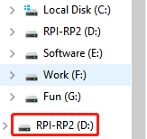Drag and drop the downloaded UF2 firmware into the RPI-RP2 drive.
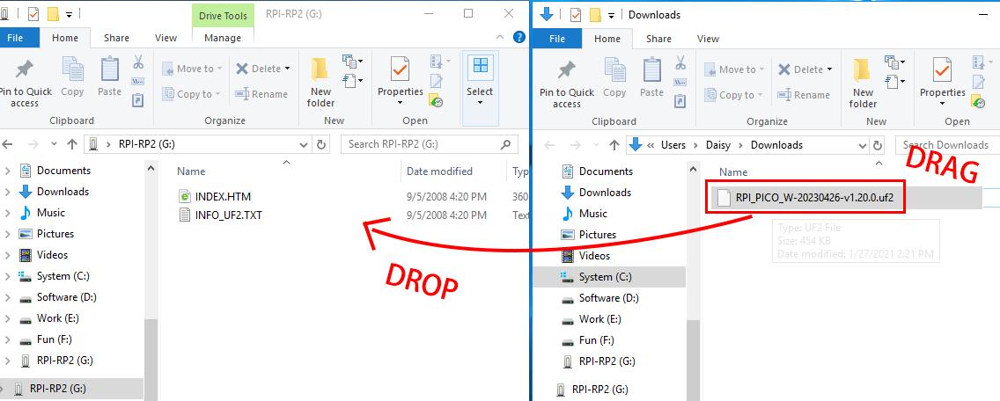After this, the RPI-RP2 drive will disappear, and you can proceed with the following steps.
2. Installing the Board Package¶
To program the Raspberry Pi Pico, you’ll need to install the corresponding package in the Arduino IDE. Here’s a step-by-step guide:
In the Boards Manager window, search for pico. Click the INSTALL button to commence the installation. This will install the Arduino Mbed OS RP2040 Boards package, which includes support for the Raspberry Pi Pico.
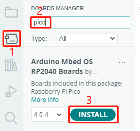During the process, a few pop-up prompts will appear for the installation of specific device drivers. Select “Install”.
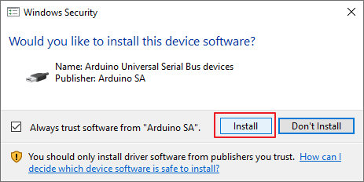Afterwards, there will be a notification indicating that the installation is complete.
3. Selecting the Board and Port¶
To select the appropriate board, navigate to Tools -> Board -> Arduino Mbed OS RP2040 Boards -> Raspberry Pi Pico.
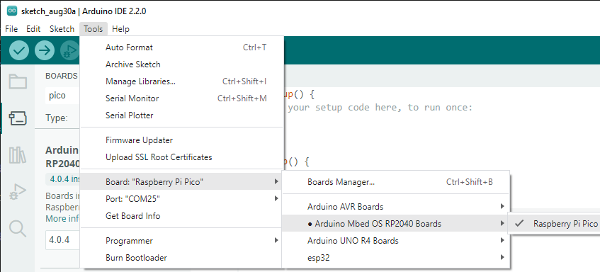If your Raspberry Pi Pico is connected to the computer, set the right port by navigating to Tools -> Port.
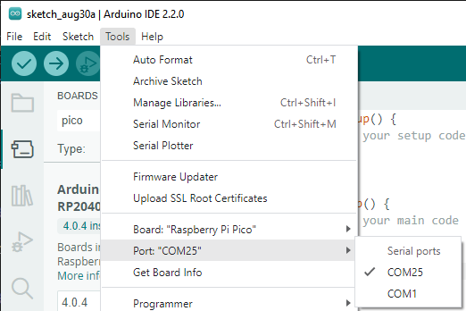Arduino 2.0 offers a new quick-select feature. For the Raspberry Pi Pico, which is typically not auto-recognized, click Select other board and port.
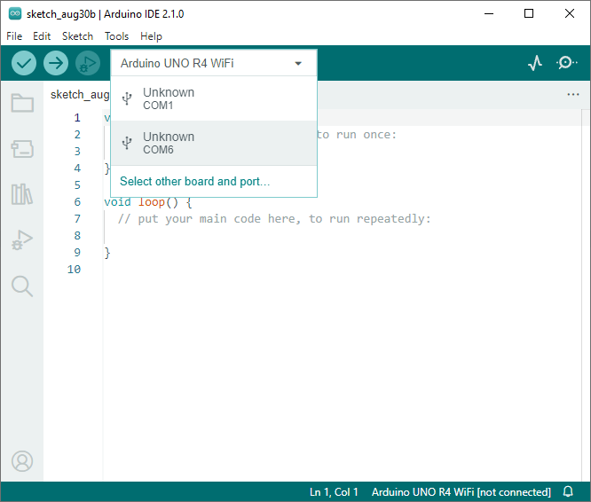Type Raspberry Pi Pico into the search bar, select it when it shows up, choose the appropriate port, and click OK.
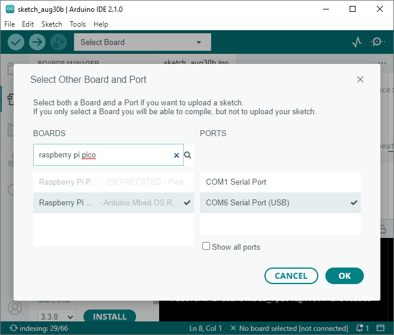You can easily reselect it later through this quick access window.
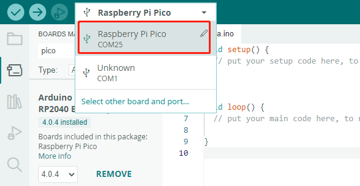Either of these methods will enable you to set the correct board and port. You’re now all set to upload code to the Raspberry Pi Pico.
4. Uploading Code¶
Now let’s dive into how to upload code to your Raspberry Pi Pico.
Open any
.inofile or use the empty sketch currently displayed. Then, click the Upload button.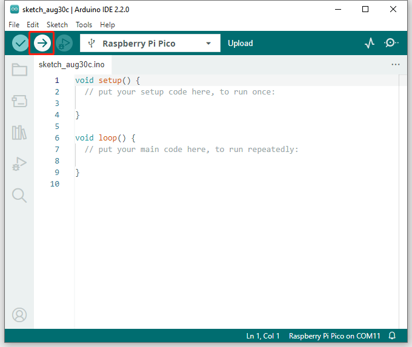Wait for the uploading message to appear, as shown below.
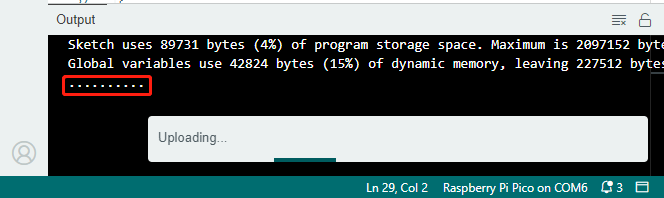Hold down the BOOTSEL button, quickly unplug your Raspberry Pi Pico, and plug it back in.
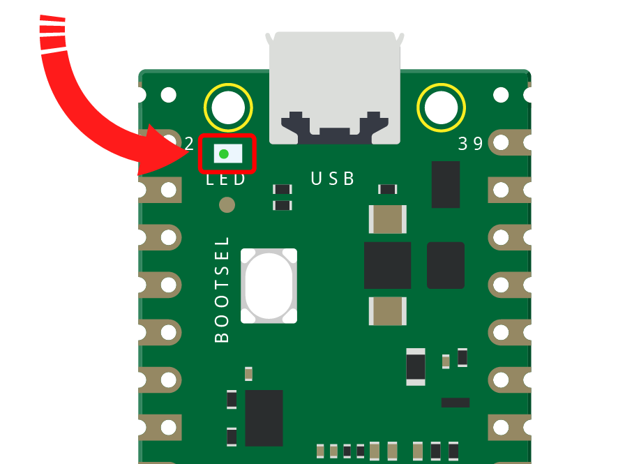Warning
This step is crucial, especially for first-time users on the Arduino IDE. Skipping this step will result in a failed upload.
Once you successfully upload the code this time, your Pico will be recognized by the computer. For future uses, simply plug it into the computer.
A prompt indicating successful upload will appear.
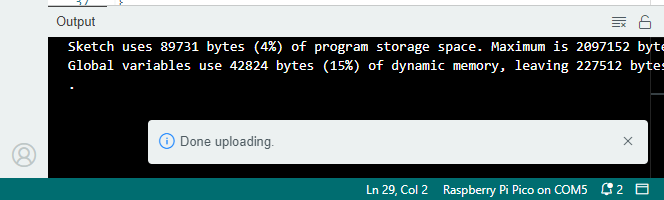